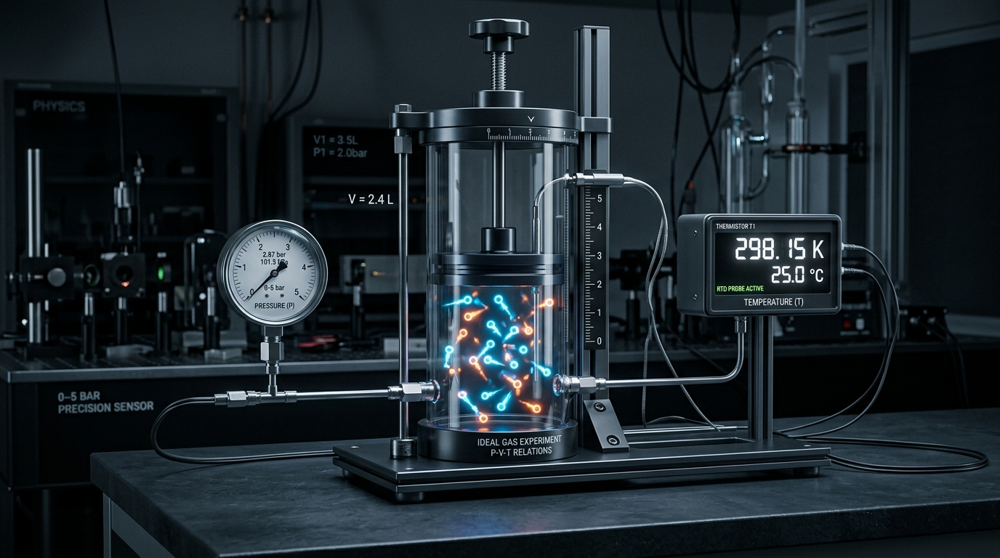

Bài 13: Bài Tập Về Khí Lí Tưởng

Phương pháp giải toán chất khí: Xác định rõ 3 thông số trạng thái (p, V, T) và vận dụng đúng định luật vật lí
NỘI DUNG BÀI HỌC
1. Phương Pháp Chung Giải Bài Tập Chất Khí
Để giải thành công các bài tập về khí lí tưởng trong Sách giáo khoa, học sinh cần áp dụng các bước sau:
Xác định đối tượng lượng khí: Kiểm tra lượng khí là cố định ($m = \text{const}$) hay có sự thay đổi khối lượng do bơm khí, xả khí hoặc rò rỉ.
Liệt kê các thông số trạng thái: Xác định bộ 3 thông số $(p_1, V_1, T_1)$ ở Trạng thái 1 và $(p_2, V_2, T_2)$ ở Trạng thái 2. Đổi nhiệt độ ra Kelvin: $T\text{ (K)} = t\text{ (}^\circ\text{C)} + 273$.
Lựa chọn định luật/phương trình thích hợp:
+ Nếu $T = \text{const}$ (Đẳng nhiệt): $p_1 V_1 = p_2 V_2$ (Định luật Boyle).
+ Nếu $p = \text{const}$ (Đẳng áp): $\frac{V_1}{T_1} = \frac{V_2}{T_2}$ (Định luật Charles).
+ Nếu $V = \text{const}$ (Đẳng tích): $\frac{p_1}{T_1} = \frac{p_2}{T_2}$.
+ Nếu cả 3 thông số đều thay đổi: $\frac{p_1 V_1}{T_1} = \frac{p_2 V_2}{T_2}$ (Phương trình trạng thái khí lí tưởng).
2. Hệ Thống Phương Trình & Đơn Vị Chuẩn SI
- Phương trình trạng thái tổng quát: $$\frac{p_1 \cdot V_1}{T_1} = \frac{p_2 \cdot V_2}{T_2}$$
- Phương trình Clapeyron - Mendeleev: $$p \cdot V = n \cdot R \cdot T = \frac{m}{M} \cdot R \cdot T$$
- Khối lượng riêng của chất khí: $$\rho = \frac{m}{V} = \frac{p \cdot M}{R \cdot T}$$
3. Đồ Thị Biến Đổi Trạng Thái Khí Lí Tưởng
Biểu diễn các quá trình biến đổi trạng thái trên các hệ tọa độ $(p, V)$, $(p, T)$ và $(V, T)$ là một kĩ năng quan trọng trong các bài tập SGK:
- Đường đẳng nhiệt trên hệ $(p, V)$ là đường hypebol; trên hệ $(p, T)$ và $(V, T)$ là đường vuông góc với trục $T$.
- Đường đẳng áp trên hệ $(V, T)$ là đường thẳng kéo dài đi qua gốc tọa độ $O$; trên hệ $(p, V)$ và $(p, T)$ là đường vuông góc với trục $p$.
- Đường đẳng tích trên hệ $(p, T)$ là đường thẳng kéo dài đi qua gốc tọa độ $O$; trên hệ $(p, V)$ và $(V, T)$ là đường vuông góc với trục $V$.
4. Các Bẫy Đơn Vị Và Lưu Ý Quan Trọng
- Nhiệt độ $T$ trong mọi công thức khí lí tưởng bắt buộc dùng Kelvin ($T = t + 273$). Không bao giờ dùng độ C trực tiếp vào tỉ số.
- Khi dùng hằng số $R = 8,31\text{ J/(mol}\cdot\text{K)}$, đơn vị bắt buộc trong phương trình Clapeyron là: Áp suất $p\text{ (Pa)}$, Thể tích $V\text{ (m}^3\text{)}$, Khối lượng $m\text{ (g)}$, Khối lượng mol $M\text{ (g/mol)}$.
- Đổi đơn vị áp suất chuẩn: $1\text{ atm} = 1,013 \cdot 10^5\text{ Pa} = 760\text{ mmHg}$; $1\text{ bar} = 10^5\text{ Pa}$.
5. Các Dạng Bài Tập SGK Và Phương Pháp Giải
Phương pháp giải:
- Khi bơm khí ở áp suất khí quyển $p_0$ vào bình dung tích $V$ qua $N$ lần nén: $$p_0 \cdot (N \cdot V_0) = p_2 \cdot V$$
- Nếu bình đã chứa sẵn khí ở áp suất $p_0$: $$p_0 \cdot (V + N \cdot V_0) = p_2 \cdot V$$
📝 Ví dụ 1 (SGK):
Một quả bóng rổ có dung tích $V = 2,5\text{ lít}$ ban đầu chưa có khí. Người ta dùng ống bơm tay để bơm không khí vào bóng. Mỗi lần nén pit-tông, ống bơm đưa được $V_0 = 125\text{ cm}^3$ không khí ở áp suất khí quyển $p_0 = 1\text{ atm}$ vào bóng. Hỏi sau bao nhiêu lần bơm thì áp suất khí trong bóng đạt $2,5\text{ atm}$? Coi dung tích bóng không đổi và nhiệt độ khí giữ không đổi trong quá trình bơm.
💡 Hướng dẫn giải:
- Đổi đơn vị thể tích: $V = 2,5\text{ lít} = 2500\text{ cm}^3$.
- Gọi $N$ là số lần bơm. Tổng thể tích không khí ở áp suất $p_1 = 1\text{ atm}$ trước khi đưa vào bóng là: $V_1 = N \cdot V_0 = 125 N\text{ (cm}^3\text{)}$.
- Sau khi nén toàn bộ lượng khí này vào bóng: Trạng thái 2 có $p_2 = 2,5\text{ atm}$ và thể tích $V_2 = 2500\text{ cm}^3$.
- Áp dụng định luật Boyle cho quá trình đẳng nhiệt ($T = \text{const}$):
$$p_1 \cdot V_1 = p_2 \cdot V_2 \implies 1 \times (125 N) = 2,5 \times 2500$$ $$125 N = 6250 \implies N = \frac{6250}{125} = 50\text{ lần}$$Kết luận: Cần thực hiện $50$ lần bơm để áp suất trong bóng đạt $2,5\text{ atm}$.
Phương pháp giải:
- Quá trình đun nóng bình kín trước khi van xả mở là quá trình đẳng tích: $$\frac{p_1}{T_1} = \frac{p_2}{T_2}$$
- Khi van xả mở ra làm thoát bớt khí (nhiệt độ giữ $T_2$): $$\frac{p_2}{p_3} = \frac{m_2}{m_3} \implies \Delta m = m_2 - m_3$$
📝 Ví dụ 2 (SGK):
Một bình thép chịu lực chứa khí oxygen ở nhiệt độ $t_1 = 27^\circ\text{C}$ và áp suất $p_1 = 150\text{ atm}$. Van an toàn của bình sẽ tự động mở ra xả bớt khí khi áp suất vượt quá $180\text{ atm}$. Hỏi nếu đun nóng bình thép đến nhiệt độ $t_2 = 87^\circ\text{C}$ thì van an toàn có mở ra xả khí không? Tính áp suất khí trong bình khi đạt $87^\circ\text{C}$.
💡 Hướng dẫn giải:
- Trạng thái 1: $p_1 = 150\text{ atm}$, $T_1 = 27 + 273 = 300\text{ K}$.
- Trạng thái 2: $T_2 = 87 + 273 = 360\text{ K}$, thể tích bình thép không đổi ($V = \text{const}$).
- Áp dụng định luật đẳng tích:
$$\frac{p_1}{T_1} = \frac{p_2}{T_2} \implies p_2 = p_1 \cdot \frac{T_2}{T_1} = 150 \times \frac{360}{300} = 180\text{ atm}$$Kết luận: Khi đạt $87^\circ\text{C}$, áp suất khí đạt đúng $180\text{ atm}$, vừa đúng ngưỡng van an toàn bắt đầu tự động mở xả khí.
Phương pháp giải:
- Khối lượng khí trong phòng ở Trạng thái 1: $$m_1 = \frac{p_1 \cdot V \cdot M}{R \cdot T_1}$$
- Khối lượng khí trong phòng ở Trạng thái 2: $$m_2 = \frac{p_2 \cdot V \cdot M}{R \cdot T_2}$$
- Khối lượng không khí thoát ra khỏi phòng: $$\Delta m = m_1 - m_2$$
📝 Ví dụ 3 (SGK):
Một căn phòng dung tích $V = 60\text{ m}^3$ ở nhiệt độ ban đầu $t_1 = 17^\circ\text{C}$ và áp suất $p_1 = 10^5\text{ Pa}$. Khi thời tiết thay đổi, nhiệt độ phòng tăng lên $t_2 = 27^\circ\text{C}$ và áp suất tăng lên $p_2 = 1,02 \cdot 10^5\text{ Pa}$. Tính khối lượng không khí đã thoát ra khỏi căn phòng. Cho biết khối lượng mol của không khí $M = 29\text{ g/mol} = 0,029\text{ kg/mol}$ và hằng số khí lí tưởng $R = 8,31\text{ J/(mol}\cdot\text{K)}$.
💡 Hướng dẫn giải:
- Đổi nhiệt độ tuyệt đối: $T_1 = 17 + 273 = 290\text{ K}$, $T_2 = 27 + 273 = 300\text{ K}$.
- Khối lượng không khí trong phòng lúc ban đầu:
$$m_1 = \frac{p_1 \cdot V \cdot M}{R \cdot T_1} = \frac{10^5 \times 60 \times 0,029}{8,31 \times 290} \approx 72,2\text{ kg}$$- Khối lượng không khí còn lại trong phòng khi ở nhiệt độ $27^\circ\text{C}$ và áp suất $1,02 \cdot 10^5\text{ Pa}$:
$$m_2 = \frac{p_2 \cdot V \cdot M}{R \cdot T_2} = \frac{1,02 \cdot 10^5 \times 60 \times 0,029}{8,31 \times 300} \approx 71,2\text{ kg}$$- Khối lượng không khí đã thoát ra khỏi phòng:
$$\Delta m = m_1 - m_2 = 72,2 - 71,2 = 1,0\text{ kg}$$Kết luận: Khối lượng không khí thoát ra khỏi phòng bằng $1,0\text{ kg}$.
Phương pháp giải:
- Áp suất khí trong xi-lanh đặt thẳng đứng cân bằng với trọng lực pit-tông: $$p = p_0 + \frac{m g}{S} = \text{const}$$
- Khi đun nóng khí, pit-tông biến đổi đẳng áp ($p = \text{const}$): $$\frac{V_1}{T_1} = \frac{V_2}{T_2} \implies \frac{S \cdot h_1}{T_1} = \frac{S \cdot h_2}{T_2} \implies h_2 = h_1 \cdot \frac{T_2}{T_1}$$
- Đoạn đường pit-tông dịch chuyển: $$\Delta h = h_2 - h_1$$
📝 Ví dụ 4 (SGK):
Một xi-lanh đặt thẳng đứng có pit-tông khối lượng $m = 2\text{ kg}$, diện tích đáy $S = 20\text{ cm}^2$, chứa một lượng khí ở nhiệt độ $t_1 = 27^\circ\text{C}$. Chiều cao cột khí trong xi-lanh ban đầu là $h_1 = 30\text{ cm}$. Đun nóng khí trong xi-lanh đến nhiệt độ $t_2 = 87^\circ\text{C}$. Hỏi pit-tông dịch chuyển lên trên một đoạn bao nhiêu cm? Cho biết áp suất khí quyển $p_0 = 10^5\text{ Pa}$ và gia tốc trọng trường $g = 10\text{ m/s}^2$.
💡 Hướng dẫn giải:
- Đổi nhiệt độ tuyệt đối: $T_1 = 27 + 273 = 300\text{ K}$, $T_2 = 87 + 273 = 360\text{ K}$.
- Áp suất khí trong xi-lanh được giữ không đổi do sự cân bằng lực của pit-tông ($p = p_0 + \frac{mg}{S} = \text{const}$).
- Áp dụng định luật Charles cho quá trình đẳng áp:
$$\frac{V_1}{T_1} = \frac{V_2}{T_2} \implies \frac{S \cdot h_1}{T_1} = \frac{S \cdot h_2}{T_2} \implies h_2 = h_1 \cdot \frac{T_2}{T_1} = 30 \times \frac{360}{300} = 36\text{ cm}$$- Đoạn đường pit-tông dịch chuyển lên phía trên:
$$\Delta h = h_2 - h_1 = 36 - 30 = 6\text{ cm}$$Kết luận: Pit-tông dịch chuyển lên phía trên một đoạn $6\text{ cm}$.
Phương pháp giải:
- Chu trình kín là một tập hợp các quá trình biến đổi trạng thái liên tiếp đưa lượng khí trở về trạng thái ban đầu: $$1 \rightarrow 2 \rightarrow 3 \rightarrow 1$$
- Lập bảng thông số $(p, V, T)$ cho từng trạng thái và áp dụng phương trình đẳng quá trình tương ứng để tìm các đại lượng chưa biết.
📝 Ví dụ 5 (SGK):
Một lượng khí lí tưởng ở Trạng thái (1) có áp suất $p_1 = 2\text{ atm}$, thể tích $V_1 = 2\text{ lít}$, nhiệt độ $T_1 = 300\text{ K}$. Lượng khí thực hiện chu trình biến đổi kín như sau: - Từ (1) sang (2): Giãn đẳng nhiệt đến thể tích $V_2 = 4\text{ lít}$. - Từ (2) sang (3): Nén đẳng áp đến thể tích $V_3 = V_1 = 2\text{ lít}$. - Từ (3) sang (1): Nung nóng đẳng tích trở về Trạng thái (1). Xác định các thông số áp suất và nhiệt độ tại Trạng thái (2) và Trạng thái (3).
💡 Hướng dẫn giải:
- Quá trình (1) $\rightarrow$ (2) (Đẳng nhiệt $T_2 = T_1 = 300\text{ K}$):
$$p_1 \cdot V_1 = p_2 \cdot V_2 \implies p_2 = p_1 \cdot \frac{V_1}{V_2} = 2 \times \frac{2}{4} = 1\text{ atm}$$- Quá trình (2) $\rightarrow$ (3) (Đẳng áp $p_3 = p_2 = 1\text{ atm}$):
$$\frac{V_2}{T_2} = \frac{V_3}{T_3} \implies T_3 = T_2 \cdot \frac{V_3}{V_2} = 300 \times \frac{2}{4} = 150\text{ K}$$- Quá trình (3) $\rightarrow$ (1) (Đẳng tích $V_1 = V_3 = 2\text{ lít}$): Kiểm tra lại $\frac{p_3}{T_3} = \frac{1}{150} = \frac{2}{300} = \frac{p_1}{T_1}$ (thỏa mãn).
Kết luận: Trạng thái 2 có $(p_2 = 1\text{ atm}, V_2 = 4\text{ lít}, T_2 = 300\text{ K})$; Trạng thái 3 có $(p_3 = 1\text{ atm}, V_3 = 2\text{ lít}, T_3 = 150\text{ K})$.
📌 4 bước giải toán chất khí: Xác định lượng khí $\rightarrow$ Liệt kê 3 thông số $(p, V, T)$ với $T = t+273 \rightarrow$ Chọn phương trình phù hợp $\rightarrow$ Đổi đơn vị SI và thế số.
📌 Bài toán bơm nén khí: Lượng khí ban đầu bằng tổng thể tích các lần bơm ở áp suất khí quyển $p_0$.
📌 Phương trình Clapeyron - Mendeleev: $p \cdot V = \frac{m}{M} R \cdot T$ sử dụng đơn vị chuẩn SI ($p\text{ Pa}$, $V\text{ m}^3$, $R = 8,31\text{ J/(mol}\cdot\text{K)}$).